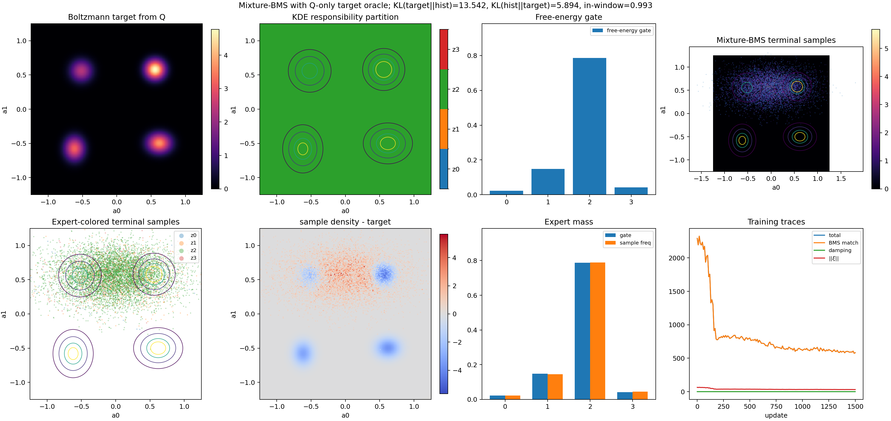

Mixture-BMS with Q-only local free-energy decomposition
The target enters only through Q(x) and grad Q(x). Local responsibilities are computed from frozen expert terminal-sample KDEs, and the gate is computed from grid free energies.

The target enters only through Q(x) and grad Q(x). Local responsibilities are computed from frozen expert terminal-sample KDEs, and the gate is computed from grid free energies.
